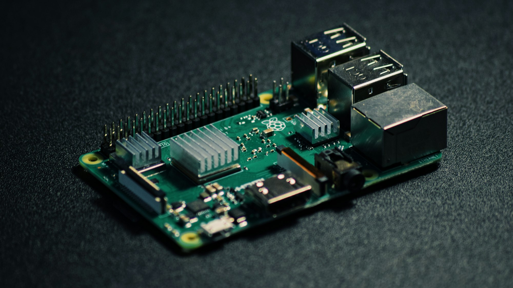

I recently discovered Presearch, a decentralised search engine that’s all about privacy and user control. Unlike mainstream search engines, Presearch runs on a network of community-operated nodes, rewarding users with PRE tokens for searches and node operation. I chose Presearch because I’m fed up with the invasive tracking and data harvesting of big tech. Its transparent, blockchain-based model appealed to me as a way to support a freer internet. As a tech enthusiast with a Raspberry Pi 4 gathering dust, setting up a Presearch node felt like the perfect way to dive in and contribute to this innovative project.
Google’s dominance in search is undeniable, but its business model relies on collecting vast amounts of personal data. Every search, click, and website visit is tracked to build detailed user profiles for advertising. I’ve grown increasingly uncomfortable with this lack of privacy and the centralised control it represents. Presearch, by contrast, prioritises user anonymity and distributes search processing across its node network, reducing reliance on a single entity. Switching to Presearch felt like a small but meaningful step towards reclaiming control over my digital footprint, plus the token rewards were a nice bonus!
Running a Presearch node lets you relay search traffic, supporting the platform’s goal of a decentralised, censorship-resistant internet. By staking PRE tokens (I started with 1000 PRE, about £150 at the time), you can earn rewards based on the search queries your node processes. It’s a brilliant way to back a privacy-focused project while generating passive income. Using a Raspberry Pi made sense for me—it’s low-power, affordable to run 24/7, and a fun way to repurpose my Pi for something meaningful.
I used a Raspberry Pi 4 (4GB model) with Raspberry Pi OS (64-bit). The setup was fairly straightforward, thanks to Presearch’s clear documentation. I installed Docker, which the node requires, signed up on the Presearch website to get my node registration code, and ran a few commands to pull the Presearch node image and start it. My Pi handled the workload well, needing only a stable internet connection and at least 10GB of free space on the SD card. Within an hour, my node was up and running, relaying searches and earning PRE tokens!
|  |
The setup wasn’t entirely smooth. Initially, I couldn’t access the Presearch dashboard to check my node’s status, likely due to a network configuration issue on my end. After some troubleshooting with the community on Reddit, I sorted it out by double-checking my registration code and firewall settings. To keep your node running smoothly, I recommend using a heatsink or fan to prevent the Pi from overheating during continuous operation. Also, regularly monitor the Presearch dashboard for updates to node requirements or software changes.
While running a Presearch node was an exciting experiment, I eventually decided to stop. The financial returns were underwhelming—my node earned only a small amount of PRE tokens daily, not enough to justify the effort. Raspberry Pis, especially newer models like the Pi 4, aren’t cheap, with prices often exceeding £100 due to demand and supply shortages. On top of that, the requirement to stake 1000 PRE tokens tied up funds that could be used elsewhere. Though Presearch’s decentralised vision is compelling, the economics didn’t add up for me, so I retired my node after a few months.
Presearch offers a refreshing alternative to traditional search engines, and running a node gave me a front-row seat to its decentralised vision. While the financial rewards didn’t meet my expectations, the process taught me a lot about Docker, Raspberry Pi, and the potential of blockchain-based systems. If you’ve got a Pi and some PRE tokens, I’d still recommend trying it out for the experience—just be mindful of the costs and staking requirements. Visit the Presearch website for setup guides and join the community to share your own journey!